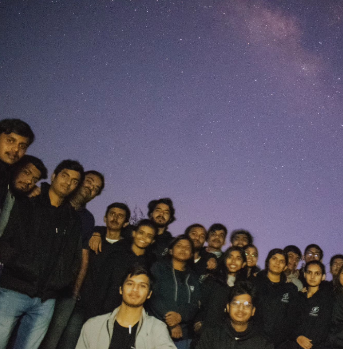

An "Expert Talk" for our college astronomy club provides a unique opportunity to delve into the captivating realms of space science and astrophysics. Esteemed professionals from diverse fields, such as cosmology, planetary science, and astrophysics, share their cutting-edge insights and discoveries, bridging complex theories with real-world applications. This event is designed to ignite curiosity, deepen understanding, and inspire innovation among students passionate about the universe. Whether exploring black holes, exoplanets, or the future of space exploration, each talk promises to be both enlightening and thought-provoking.
Star Party

"Stargazing" is an immersive experience organized by our college astronomy club, inviting students to marvel at the cosmos and explore the wonders of the night sky. Equipped with telescopes and guided by experienced astronomers, participants can observe celestial phenomena like planets, constellations, star clusters, and distant galaxies. This event combines the serenity of nature with the awe of astronomy, fostering a deeper appreciation for the universe and encouraging a sense of wonder and discovery. Whether you’re an enthusiast or a curious newcomer, stargazing offers a mesmerizing glimpse into the vast expanse beyond our world.
Astro Sessions
Welcome to Astro Sessions, an enlightening series hosted by our college's Astronomy Club! These sessions are designed to spark curiosity and expand your understanding of the cosmos. From exploring celestial phenomena and stargazing to discussing groundbreaking discoveries in space science, each session is packed with interactive discussions, engaging presentations, and hands-on activities. Whether you’re a seasoned stargazer or just beginning your journey among the stars, Astro Sessions offer something for everyone. Join us as we unravel the mysteries of the universe, one session at a time!